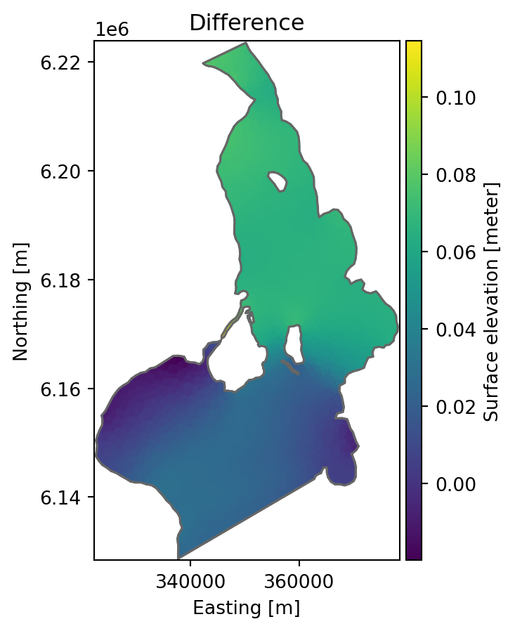
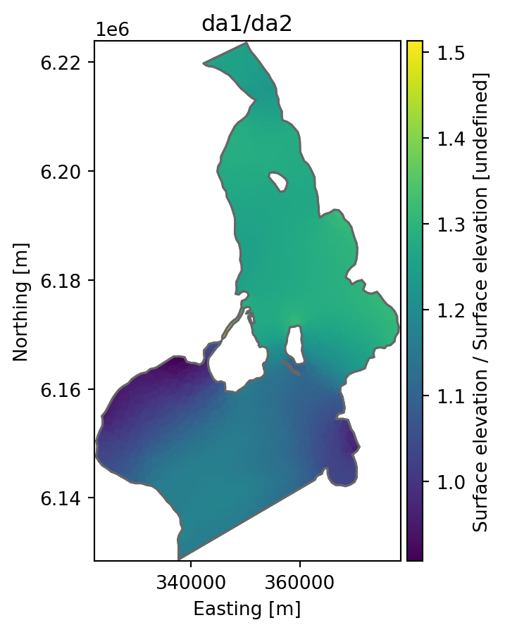

import mikeioDataArray - Arithmetic
We can basic arithmetic operations (plus, minus, multiplication and division) with DataArrays, both with scalars, numpy arrays and other DataArrays. The output will in all cases be a new DataArray.
fn1 = "../tests/testdata/oresundHD_run1.dfsu"
da1 = mikeio.read(fn1, items="Surface elevation")[0]
fn2 = "../tests/testdata/oresundHD_run2.dfsu"
da2 = mikeio.read(fn2, items="Surface elevation")[0]Multiply or add scalar
We can scale a DataArray or add a constant using *, +, / and -
da1.values.mean()0.18681714da1_A = da1 + 1
da1_B = da1 - 1
da1_A.values.mean(), da1_B.values.mean()(1.1868172, -0.81318283)da1_C = da1 * 2
da1_D = da1 / 2
da1_C.values.mean(), da1_D.values.mean()(0.37363428, 0.09340857)Difference between two DataArrays
Assume that we have two calibration runs and we wan’t to find the difference…
da_diff = da1-da2
da_diff.plot(title="Difference");
da_diff = da1/da2
da_diff.plot(title="da1/da2");